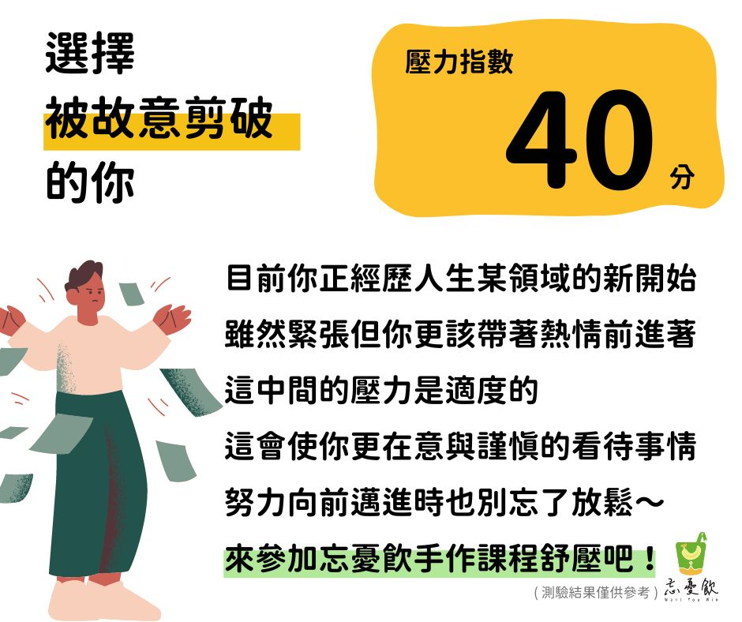
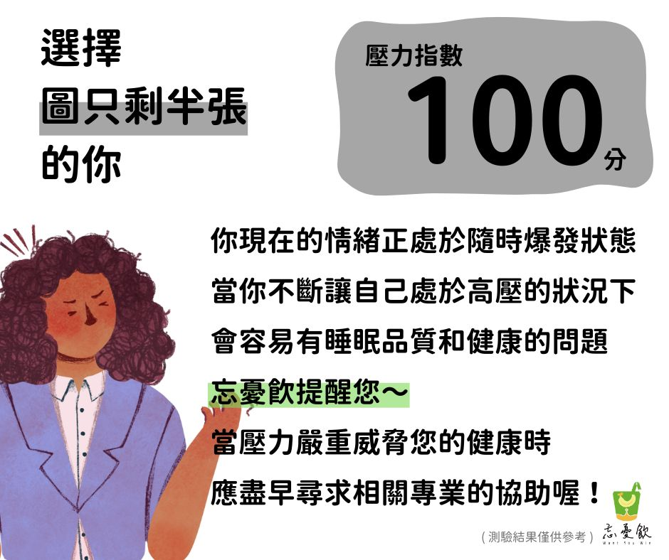
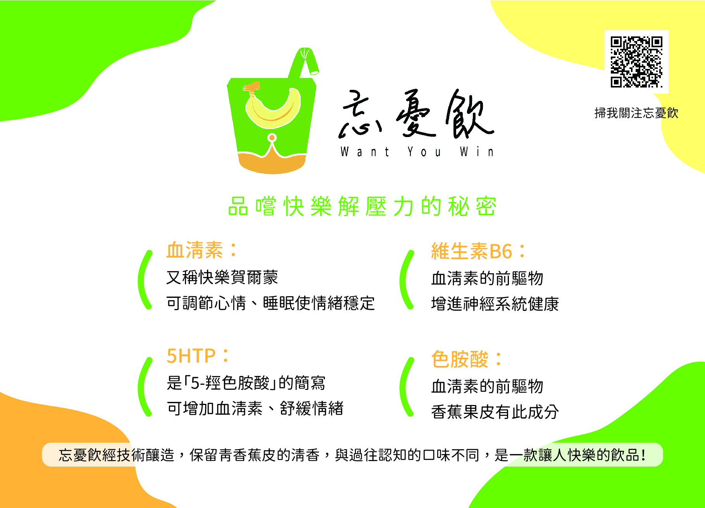

Featured Works.
Project 01
大學專題：忘憂飲品牌視覺系統

核心視覺美學
透過高明度色彩與簡約幾何圖案的交織，將『忘憂』轉化為視覺上的輕盈美學，完美體現產品天然、低糖、友善環境的純淨本質。
Responsibilities
視覺主調定義 / 幾何圖案開發 / 視覺排版
Design Guidelines
視覺識別規範
選用 jf open 粉圓 1.1 作為標準字，其圓潤特質呼應品牌親和力；色彩配置以天然綠與舒壓黃為主軸，建立輕盈且具活力的視覺基調。
#92C03E
#F2ED8E
#EE9E33
jf open 粉圓 1.1
品嚐快樂，解壓力的秘密


數位延伸 / 互動心理測驗
將壓力情緒指標視覺化，透過色彩心理定義互動回饋，確保跨媒介視覺的一致性。
Digital Identity / UI Flow

實體產出 / 產品介紹明信片
梳理科學成分資訊，轉化為直覺的資訊圖表，並完成 CMYK 印刷製程與完稿。
Information Design / CMYK Print
Project 02
高中專題與自主練習
插畫應用展示
數位影像處理
Image Processing / Inkjet Print